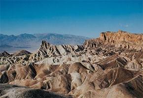
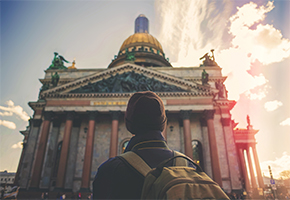
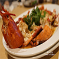
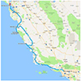
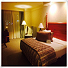

-
New York
More -
Fairbanks and Seattle
More -

Westworld
More -
California
More -

Russia
More -
Canada
More -
France
More
-
Japan
More
-
New York
[D1] New York saw as before
[D2] Brooklyn Bridge / Chinatown / Times Square
[D3] Buffalo / Niagara Falls
[D4] finally made a 1 hour trip
[D5] WOODBURY OUTLETS
[D6] Art New York (Metropolis / Broadway Chicago )
[D7] Chelsea Market / High Line Park / Empire State Building
[D8] Liberty and the Phantom of the Opera
[D9] Lazy day (Asiate and Fifth Avenue )
[D10] Home, except the stomach, every organ of my body likes New York.【Stay】Airbnb There are many options below 1000, if QUEENS or BROOKLYN close to Manhattan, near the Manhattan area, not far from the subway station, the choice is actually quite Tingyou, we booked the apartment has two large rooms, each 20 Above the square, as well as the kitchen, we opened a total of two fires, to appease the stomach from China very well.
 x
x -
Fairbanks and Seattle
[D1] Fairbanks - Chandalar Ranch Cabin Aurora Observatory.
[D2] Fairbanks - Gift shop Chandalar Ranch Cabin Aurora
[D3] Fairbanks - pit father's Santa Claus village under the Aurora flying tubing observations
[D4] Fairbanks - University of Alaska Museum Jenner Springs Planetarium
[D5] Fairbanks - Seattle Dog Sled Visitor Center
[D6] Seattle - Bill Gates Town Pike Market Chinatown
[D7] Seattle - University of Washington Boeing Factory Outlets
【Diet】 Fairbanks is really small, the place to eat is not far from the hotel, can be reached by foot, but can not eat a few stores.Thai food saved us one life, to eat a small vegetable really is not easy!Recommended near the Thai Thai food 2, thai house close to the hotel, diagonal is the gift shop.
 x
Seattle's Chinese restaurant, you can eat Chinese food, but the price is not cheap. -
Westworld
[D1] Arrived in San Francisco at night
  x
[D2] San Francisco (City Hall - Fisherman's Wharf - Art Palace - Ride through the Golden Gate Bridge)
[D3] Stanford University - Google Headquarters - Monterey Lovers Point, Monterey Sunset
[D4] Highway 1 (Big Sur - Seal Point - Danish Village - Santa Barbara)
[D5] Los Angeles (Hollywood, Walk of Fame, encounter HBO new play WestWorld Premiere)
[D6] Las Vegas (Barstow Outlets halfway stop)
[D7] Day 7 Route 66 Kingman Kingman - Grand Canyon South Rim
[D8] Horseshoe Bend - Antelope Canyon Bryce National Park Sunset at Bryce Canyon
[D9] Zion Nation Park (The Narrows Hiking Trail - Crying Stone)
[D10] Zion NP (Angel's Landing) - Las Vegas (Zumanity Show)
[D11] Las Vegas North Outlets - Death Valley Death Valley NP Zabriskie Point to see the sunset
[D12] Death Valley NP (Badwater Basin - Ghost Town) - Yosemite Yosemite
[D13] Yosemite NP Yosemite Valley - Gilroy Outlets -
California
[D1] Hong Kong transfer to San Francisco, accommodation near San Francisco Airport.
x
[D2] Take the car on the road, visit the Golden Gate Bridge, Flower Street, Fool's Pier, accommodation in San Francisco.
[D3] Visit Oracle Stadium, Silicon Valley, Stanford University, Accommodation Monterey.
[D4] Visit No. 1 Highway 17MILE, Carmel, Pfeiffer Beach and other attractions, accommodation Santa Barbara.
[D5] Camarillo Premium Outlets Shopping, tours Santa Monica Beach, La Jolla Beach, Accommodation San Diego.
[D6] Play Ocean Park, visit the aircraft carrier, accommodation in San Diego.
[D7] Desert Hills Premium Outlets (Los Angeles) Shopping, accommodation in Palm Springs.
[D8] Tour 66 Road Town Kingman and Seligman, accommodation Williams.
-
Russia
[D1] Irkutsk - the place to revisit, small night exploration
[D2] Olkhon Island - Meet the Siberian jadeite
[D3] Baikal South Line - drunk down the ice lake
[D4] Baikal North Line - Siberian emerald
[D5] Irkutsk - Blizzard burst
[D6] Listvyanka - Snowy Lake Baikal
[D7] Irkutsk - a beam of Christ.【Language】 Russia to use Russian, English penetration rate is not high, in Moscow and St. Petersburg and other near European cities City Fair, hotels, railway stations, banks, restaurants, shops, most employees will be a little English, but it is difficult to find English-speaking in Siberia Personnel, hotel staff is good, but many people in other parts of the world do not understand English, so to have the psychological preparation for communication, mobile translation software is also a good choice, learn a Russian or two Russian "hello" "thank you" to narrow The distance from the locals makes them more willing to help you.
x -
Canada
[D1] Shanghai - Vancouver - Edmonton - Accommodation: Nisku Inn and Conference Center
[D2] Edmonton - Valleyview- Peace River- High Level-Accommodation: Best Western PLUS Mirage Hotel and Resort
[D3] High Level- Hay River- Fort Smith-Accommodation: WOOD BUFFALO INN
[D4] Awesome Autumn at Bison National Park-Accommodation: WOOD BUFFALO INN
[D5] Fort Smith- Yellowknife-Accommodation: Coast Fraser Tower
[D6] Yellow knife town-Accommodation: Coast Fraser Tower
[D7] Yellowknife - Fort Simpson-Accommodation: The Willows Inn
[D8] Nahanni NP (Nahanni National Park)-Accommodation: The Willows Inn
[D9] Fort Simpson- Fort Nelson-Sleep: Super 8 Fort Nelson【Traffic】 Highway 1-Also known as horse more high-speed, is the longest highway in the northwest. The horses are some 690 kilometers high-speed high-speed, starting at the junction of Alberta and Northwest China, the terminus is Wrigley 63 degrees north latitude. This road 220 km before the pavement, after the card Jisza after the road to the northern end of No. 3 yellow knife town , west to continue to open non-paved road to Simpson, Simpson to the northwest can reach the end of Wrigley (This section did not personally opened).
x -
France
[D1] France's first stop, Mont Saint-Michel
[D2] On the Mont Saint-Michel, open the castle trip
[D3] Dark clouds finally dispersed, sunny start
[D4] Paris, the beginning of the waves
[D5] Leisure, Paris
[D6] Say goodbye to Paris, rushed to Southern France sunshine!
[D7] Southern France sun violent direct drying, only for a blue sea
[D8] The beginning of a delicious breakfast, from the town of Lafayette to lavender flowers
[D9] Do not go to Southern France, then Paris【Car rental】 This time I divided two car rental orders are completed in the rental car, respectively, "Paris ~ Mont Saint-Michel ~ Loire Valley ~ Paris," a single, and a list of South France (Avignon and also). Very smooth and fly as always!
x -
Japan
[D1] Qingdao fly Osaka
x
[D2] Osaka day trip, the first experience of the earthquake
[D3] To the Millennium ancient capital - Kyoto
[D4] Into Wonderland-like thousand Torii
[D5] To encounter great temple - glass light hospital
[D6] Check in Kawaguchiko Onsen Hotel in Mount Fuji
[D7] Personally experience Guinness World Records haunted house - Fuji anxious haunted house
[D8] Arrive in Tokyo and stay at Kabuki's apartment
[D9] Encounter lucky cat temple - Hao De Temple
[D10] Left Japan